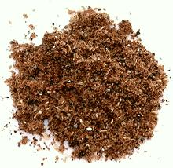

 |
Mekelesha Spice MixEthiopia, Eritrea - Mekelesha | ||||
| Makes: Effort: Sched: DoAhead: |
2 T * 5 min Yes |
This mix of aromatic spices is used to balance spicy dishes. It should be added to stews for just the last few minutes. | |||
|
1 1 1 30 |
in t t |
Cinnamon Cloves Peppercorns (1) Cardamom Pods |
Make: - (5 min)
|